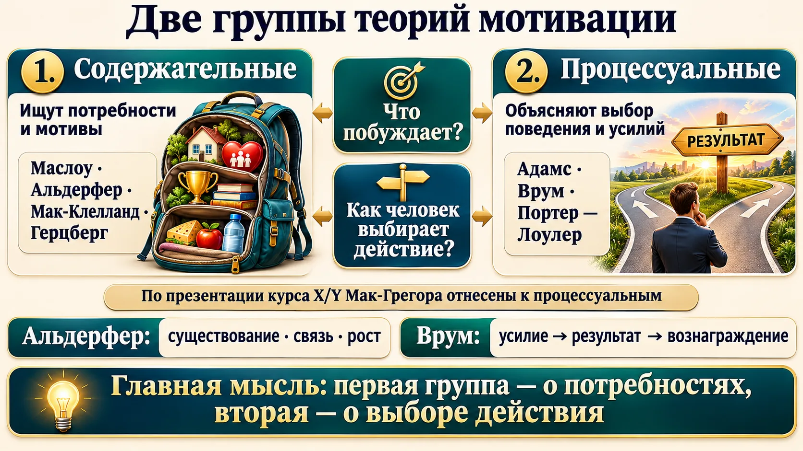
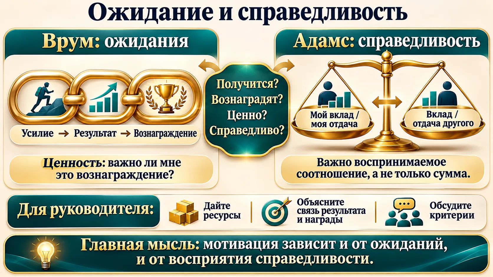
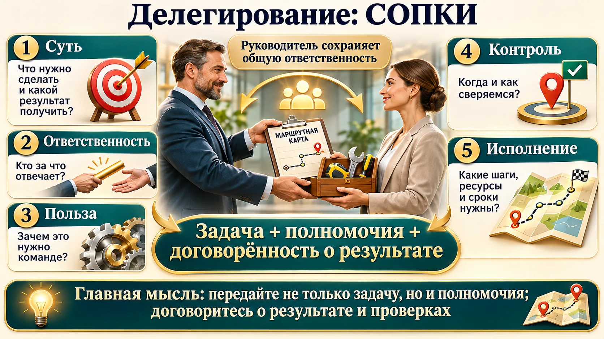
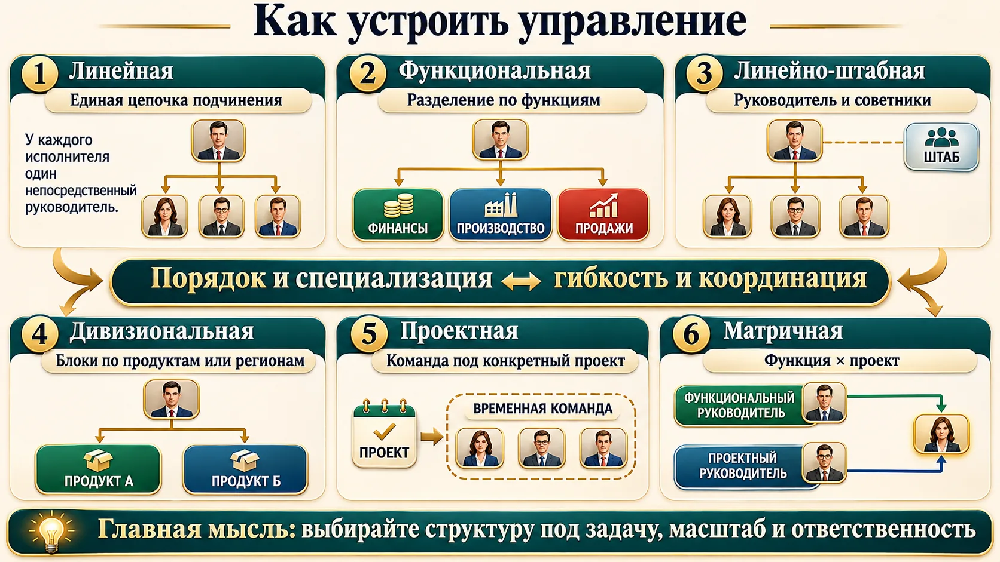
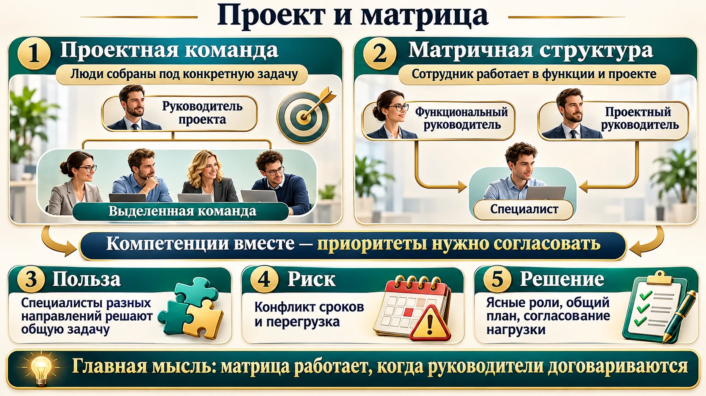
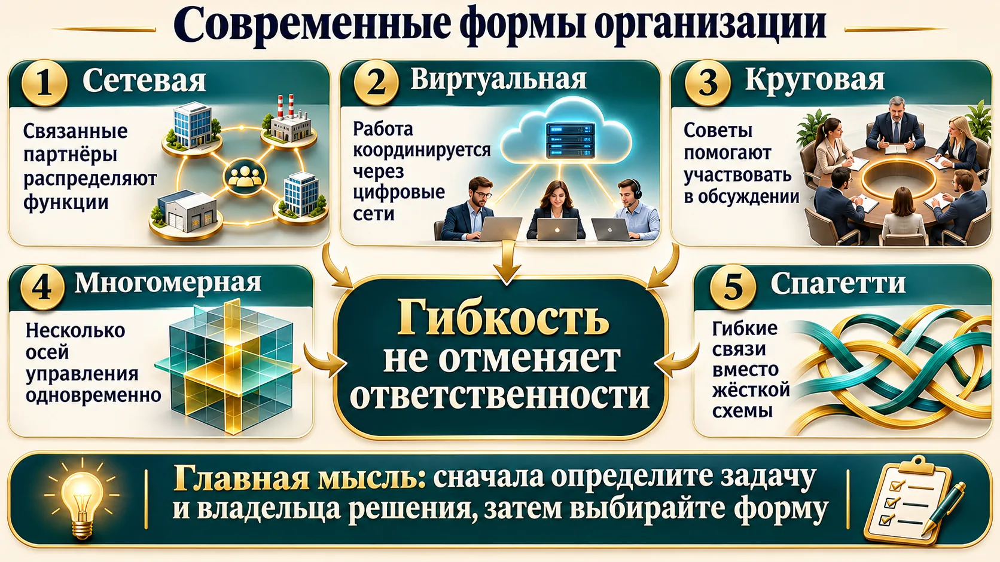
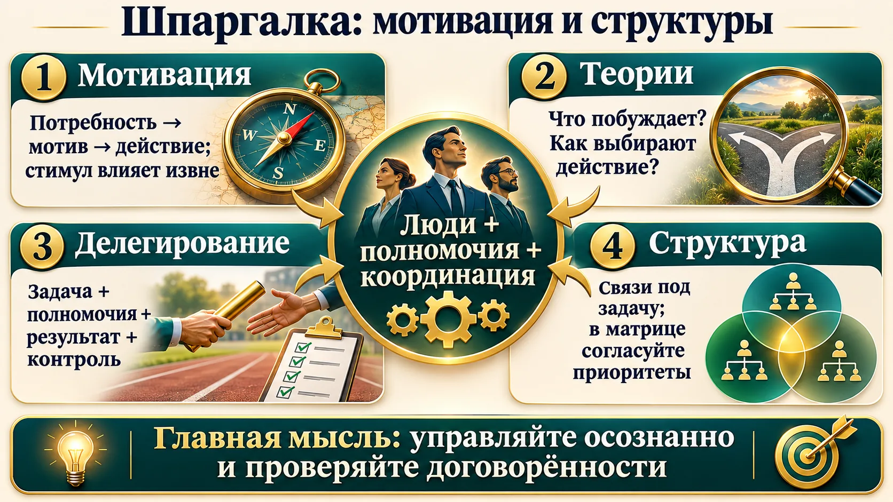

От потребности к действию
Потребность — переживаемая нужда или стремление. Мотив — внутреннее побуждение; стимул — внешнее условие, которое может побудить действовать. Потребность связывается с мотивом и поведением ради цели; результат может удовлетворить её полностью, частично или не удовлетворить.
Один и тот же курс обучения для одного сотрудника — рост, для другого — возможность общаться. Поэтому руководителю важно не угадывать мотив, а обсудить его.
🧭 Что такое мотивация?
В презентации курса — процесс создания побудительных мотивов для продуктивного выполнения работы. Современные описания также рассматривают направление и интенсивность усилий человека.
🛠 Применение: спросите сотрудника, какой результат работы для него важен и что мешает к нему прийти.
⚠️ Ловушка: внешняя премия — стимул; личная причина, по которой она важна человеку, относится к мотивам.
Две группы теорий

Содержательные теории спрашивают, какие потребности и мотивы побуждают человека; процессуальные исследуют, как он оценивает ситуацию и выбирает усилие и поведение.
Общая цепочка в лекции: потребность создаёт напряжение; мотив направляет поведение к цели; стимул — внешнее условие, влияющее на выбор действия. Результат может удовлетворить потребность полностью, частично или не удовлетворить. Одна и та же премия будет иметь разную ценность для разных людей.
🎯 Для теста по презентации курса: содержательные — Маслоу, Альдерфер, Хаббард, Тейлор, Мак-Клелланд, Герцберг; процессуальные — Адамс, Врум, Мак-Грегор и Портер — Лоулер. Это классификация преподавательских слайдов; другие учебники группируют модели по-разному.Содержательные модели, перечисленные в презентации:
- Маслоу: физиологические потребности, безопасность, принадлежность, уважение и самоактуализация. Слайд показывает уровни; это не гарантированный одинаковый порядок при любых обстоятельствах.
- Альдерфер ERG: существование (материальные условия и безопасность), связи (отношения), рост (развитие и сложные задачи). По классификации курса это содержательная теория.
- Мак-Клелланд: приобретённые потребности достижения, причастности и власти; они помогают объяснить, почему одному важна сложная цель, другому — команда или влияние.
- Герцберг: гигиенические условия снижают неудовлетворённость, а мотиваторы связаны с содержанием и значимостью работы. Повышение оплаты само по себе не всегда создаёт интерес к задаче.
- Тейлор: научная организация труда, нормирование и стандартизация выполнения. В лекции модель включена в классификацию слайдов.
- Хаббард: в презентации обсуждается шкала мотивов от долга и убеждений до личной выгоды и денег. Преподаватель поясняет это как одну из моделей; человек может руководствоваться несколькими причинами.
Процессуальные модели: Адамс рассматривает воспринимаемую справедливость вклада и отдачи; Врум — связь усилия, результата и ценного вознаграждения; Мак-Грегор X/Y — предположения руководителя о труде; Портер—Лоулер соединяет усилие, результат и вознаграждение. На экзамене различайте автора, ключевую идею и группу именно по презентации курса.
🧭 Четыре автора, которых важно различать
Маслоу описывал уровни потребностей. Альдерфер объединил их в ERG: существование, связь, рост. Мак-Клелланд выделял приобретённые потребности достижения, власти и причастности. Герцберг различал мотиваторы в содержании работы и гигиенические факторы условий.
➕ Дополнение: строгая лестница Маслоу не получила однозначного эмпирического подтверждения; ERG не требует одной неизменной последовательности. OpenStax, Principles of Management.
⚠️ Теории — инструменты для размышления, а не диагноз конкретного сотрудника.
Врум и Адамс: два вопроса руководителю

Врум: человек оценивает, приведут ли усилия к результату, результат — к вознаграждению, и ценно ли оно для него. Если одно звено не работает, обещание премии может не мотивировать.
Адамс: сотрудник сопоставляет воспринимаемые вклад и отдачу со своим ориентиром. Ощущение несправедливости может привести к снижению усилий или разговору о вознаграждении.
🧭 Мак-Грегор X и Y
Это два набора управленческих предположений о людях, а не тест, делящий сотрудников на неизменные типы. В презентации курса модель отнесена к процессуальным. Подробнее: OpenStax.
🛠 Спросите: достаточно ли ресурсов, понятна ли связь результата и награды, какую награду ценит сотрудник и как он воспринимает критерии справедливости?
⚠️ Валентность у Врума — ценность исхода для человека, а не другое название справедливости.
Делегирование: задача и полномочия

На занятии подчёркивается: делегирование включает передачу задачи и необходимых полномочий. Причины делегировать — освободить время руководителя, привлечь специальную компетенцию, развить сотрудника, проверить готовность к более сложной задаче и распределить нагрузку. Преподаватель предлагает двигаться от простых поручений к проектам и передаче функций. Передавайте ожидаемый результат, сроки, доступные ресурсы и границы самостоятельного решения. Руководитель отвечает за выбор исполнителя и контроль результата. Делегирование помогает руководителю сосредоточиться на главном, использовать компетенцию специалиста и развивать команду. Передать только работу без прав и ресурсов — значит оставить исполнителя без необходимых инструментов.
Передавайте не только работу, но и полномочия, которые нужны для её выполнения. Среди причин делегирования преподаватель называет высвобождение времени руководителя, использование компетенции специалиста, развитие и проверку сотрудника и распределение нагрузки. Начинайте с отдельных задач, затем передавайте проекты и функции; заранее оговорите результат, срок, ресурсы и границы самостоятельного решения. 🎯 В показанном на занятии тесте делегирование определялось как передача задач и полномочий лицу, добровольно принимающему ответственность за выполнение. Это формулировка конкретного вопроса; общая ответственность руководителя за подразделение сохраняется.
СОПКИ: суть, ответственность, польза, контроль, исполнение. Договоритесь о результате, полномочиях, пользе, сроках и точках проверки. Начните с посильной задачи и наращивайте самостоятельность.
💬 Преподаватель считает, что стратегические и рискованные решения и вопросы вознаграждения требуют особого внимания руководителя. Распределение конкретных полномочий зависит от организации.
🛠 Выберите задачу: что именно должно получиться, какие права понадобятся, когда вы сверитесь? Попросите исполнителя пересказать договорённость своими словами.
Связи и основные структуры

Организовать совместную работу — значит разложить общую цель на задачи, распределить функции, ответственность, полномочия и ресурсы и установить связи между участниками. Пример с футболом из лекции: если все бегут за мячом и не понимают свои роли, команде трудно действовать согласованно. Вертикальные связи соединяют уровни иерархии; горизонтальные — коллег одного уровня. Линейные связи выражают прямое подчинение; функциональные связывают людей по специальным вопросам. Формальные отношения закреплены ролями, неформальные возникают в ходе общения. Организовать работу — значит разделить общую задачу на блоки, распределить функции, ответственность, полномочия и ресурсы, определить связи между участниками. Преподаватель сравнивает это с футбольной командой: если все бегут за мячом, не понимая своих ролей, согласованной игры не получится. Структура распределяет задачи, права и связи. Вертикальные связи соединяют уровни управления, горизонтальные — участников на одном уровне. Линейные связаны с прямым подчинением; функциональные — с профильным взаимодействием. Формальные связи закреплены в ролях, неформальные складываются между людьми.
В лекции линейная структура иллюстрируется ясной цепочкой подчинения, функциональная — разделением по специальностям, линейно-функциональная сочетает вертикаль и профильные связи. На примере вуза подразделения подчиняются руководителям и взаимодействуют по направлениям учебной, научной и административной работы. Ни один тип не существует везде в чистом виде: оценивайте, какие связи преобладают и не перегружен ли руководитель. Линейная структура даёт ясность подчинения; функциональная группирует работу по специальностям; штаб помогает готовить решения; дивизионы могут строиться по продукту или региону. В реальности организация часто сочетает признаки нескольких моделей.
🧭 Как отличить штаб от линейного руководителя?
Линейно-штабная структура сохраняет вертикаль подчинения и добавляет штаб для анализа и подготовки рекомендаций. Дивизиональная может делить работу по продуктам или регионам. Проектная объединяет специалистов вокруг временной задачи. В матрице пересекаются функциональное и проектное руководство; заранее согласуйте приоритеты и порядок разрешения конфликтов. Современные формы, обсуждавшиеся в лекции: сетевая, многомерная, круговая, виртуальная и «спагетти». Аутсорсинг передаёт функцию внешнему исполнителю, но заказчик задаёт критерии и контролирует результат. Линейный руководитель управляет подчинённой работой. Штаб обычно готовит анализ и рекомендации; его конкретные права определяются положением об организации.
🛠 Нарисуйте на одном листе, кто принимает решение, кто консультирует и кто выполняет. Сверьте схему с фактическим процессом.
⚠️ Много линий на схеме не гарантирует хорошей координации: важно, кто разрешает противоречия.
Проект и матрица

В проектной организации команда собирается для конкретной задачи. В матричной сотрудники функциональных подразделений одновременно работают над проектом: пересекаются функциональный и проектный руководители.
Это соединяет знания разных специалистов, но требует договориться о приоритетах и нагрузке. В университете преподаватель приводит пример научного проекта с участниками разных факультетов.
🛠 Измените число сотрудников и потребности проектов в тренажёре. Найдите перегруженный отдел и согласуйте приоритеты руководителей.
⚠️ Два направления координации не означают, что противоречивые распоряжения нужно молча выполнять: правила решения конфликтов должны быть заранее определены.
Новые формы: смотреть на задачу

Преподаватель упоминает сетевые формы с распределёнными участниками, виртуальные организации, использующие цифровые сети, круговые формы с участием советов и многомерные структуры с несколькими осями управления. Образ «спагетти» иллюстрирует гибкие взаимодействия.
🧭 Сетевое и виртуальное — одно и то же?
Сеть описывает связи между участниками; виртуальная организация подчёркивает способ их координации через цифровые средства. Физические люди, оборудование и обязательства при этом остаются.
🛠 Для своей организации обозначьте, какие решения нуждаются в быстром горизонтальном контакте, а какие — в ясном владельце и формальной ответственности.
⚠️ Гибкость не отменяет ответственности. Пример из лекции о конкретной компании не установлен по записи и не используется как доказанный кейс.
Что выучить к аттестации
Отметки сохраняются в этом браузере.
Все пункты отмечены.
Проверьте себя
Учебные вопросы составлены по теме; это не восстановление показанного экзаменационного теста.
1. Что относится к теории ERG Альдерфера?
2. Что означает валентность у Врума?
3. Что сравнивают в теории Адамса?
4. Что необходимо согласовать при делегировании?
5. Какая связь соединяет уровни управления?
6. Что характеризует матричную структуру?
7. Что делает штаб?
8. Как использовать модель организационной структуры?
Отвечено: 0 / 8
Шпаргалка

- Мотивация: потребность → мотив → действие; стимул влияет извне.
- Делегирование: задача + полномочия + ясный результат + контроль.
- Структура: выберите связи под задачу; в матрице согласуйте приоритеты.
Источник урока: запись 10.11.2026 и презентация преподавателя. Дополнения помечены и снабжены ссылками.